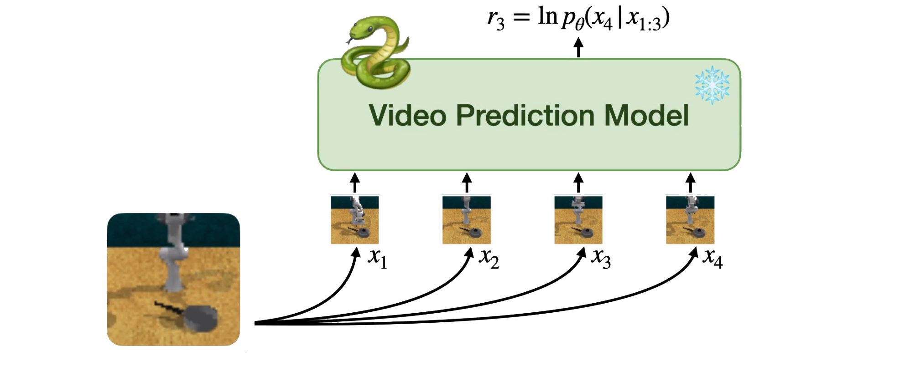

{{ page.title }}
Neural Information Processing Systems (NeurIPS 2023)
Alejandro Escontrela Ademi Adeniji Wilson Yan Ajay Jain Xue Bin Peng Ken Goldberg Youngwoon Lee Danijar Hafner Pieter Abbeel
University of California, Berkeley

|
Abstract
Specifying reward signals that allow agents to learn complex behaviors is
a longstanding challenge in reinforcement learning. A promising approach is
to extract preferences for behaviors from unlabeled videos, which are
widely available on the internet. We present Video Prediction Rewards (VIPER),
an algorithm that leverages pretrained video prediction models as action-free
reward signals for reinforcement learning. Specifically, we first train an
autoregressive transformer on expert videos and then use the video prediction
likelihoods as reward signals for a reinforcement learning agent. VIPER
enables expert-level control without programmatic task rewards across a wide
range of DMC, Atari, and RLBench tasks. Moreover, generalization of the video
prediction model allows us to derive rewards for an out-of-distribution
environment where no expert data is available, enabling cross-embodiment
generalization for tabletop manipulation. We see our work as starting point
for scalable reward specification from unlabeled videos that will benefit
from the rapid advances in generative modeling.
|
Paper: [PDF] Code: [GitHub] Webpage: [Link] Preprint: [arXiv]
|
Bibtex
@article{VIPEREscontrela2023,
journal = {Neural Information Processing Systems},
author = {Escontrela, Alejandro and Adeniji, Ademi and Yan, Wilson and Jain, Ajay and Peng, Xue Bin and Goldberg, Ken and Lee, Youngwoon and Hafner, Danijar and Abbeel, Pieter},
keywords = {Artificial Intelligence (cs.AI)},
title = {Video Prediction Models as Rewards for Reinforcement Learning},
publisher = {arXiv},
copyright = {Creative Commons Attribution 4.0 International},
year = {2023},
eprint = {2305.14343},
archiveprefix = {arXiv},
primaryclass = {cs.LG},
}